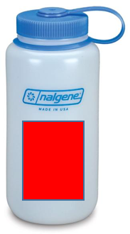

Ecological Statistics in the Greater Yellowstone Ecosystem
Andy Hoegh
Statistics?

Statistics?

Statistics?

Ending a Conversation (with Statistics)
Statistics?

Statistics and Science
“The best thing about being a statistician is that you get to play in everyone’s backyard.” - John Tukey
Statistics and Science

Statistics and Science

Collaborative Science
Statistics serves as the interface for answering challenging scientific problems while collaborating with scientists:
- Adam Sepulveda, US Geological Survey
- Frank van Manen & Mark Haroldson, US Geological Survey
- Kathi Irvine, US Geological Survey
Evaluating Zebra Mussel Monitoring

EDNA Biosurveillance

Grizzly Bear Dispersal Behavior

Climate Change Impacts on Plant Communities

Evaluating Zebra Mussel Monitoring
Evaluating Zebra Mussel Monitoring
Meaghan Winder with Adam Sepuleveda

Goal: evaluate current monitoring regime

Plankton Tows

Plankton Tows: Samples
Do we think zebra mussels are present?

Plankton Tows: Samples
Do we think zebra mussels are present?

Plankton Tows: Samples
How about now?

Plankton Tows: Samples

Detection Probability
- In biological settings, many organisms are elusive or hard to detect
- Not identifying the organism does not mean it is not present
- Understanding detection probability is essential for monitoring programs
- Statistics (occupancy models) can be used to estimate detection probability
Detection Probability for Zebra Mussels
Depends on characteristics of the water body

Sampling Intensity
Almost certainly need to increase sampling intensity

Sampling Intensity
Testing samples from individual tows provides better estimate of detection probability
EDNA Biosurveillance for Harmful Organisms and Invasive Species
EDNA Biosurveillance
Christian Stratton with Adam Sepulveda

Environmental DNA

Goal: Develop computationally-efficient software for eDNA surveillance

Data Collection

EDNA Data Structure
- Presence Data:
 Species occurs AND species is detected with eDNA
Species occurs AND species is detected with eDNA
- Absence Data:
 Species does not occur OR species is not detected with eDNA.
Species does not occur OR species is not detected with eDNA.
Multiscale Occupancy Model
Two detection probabilities are necessary
- probability of detecting eDNA in bottle, given it is at site 
- probability of detecting eDNA in the pipette, given it is in bottle
Efficient Computation and Software

Future Goals: Streaming analysis

Understanding Grizzly Bear Dispersal Behavior
Collective Movement Models for Grizzly Bears
with Frank Van Manen and Mark Haroldson
Previous work by Chris Peck and Jacob Dym
Goal: Predict Expanding Grizzly Range

Dispersal Dynamics

Telemetric Data to Movement Modeling

Collective Movement and Agent Based Models
-Collective animal movement refers to a situation where animals influence each others behavior.
- Agent based models are a simulation based approach using a set of agents.
- Each agent is given a relatively simple set of rules, which control interactions between agents.
- The collective behavior of agents can model complex population level characteristics.
Independent Model

Collective Model

Predictive Map (still to come)

Climate Change Impacts on Plant Communities
Climate Monitoring in Grand Teton NP
with Christian Stratton and Kathi Irvine
Goal: Evaluate Monitoring Plan

Data collection

Data structure

Data Challenges
- We are interested in detecting changes across time; however, changes is difficult to describe.
Changes would refer to comparisons across a set of grids with different species (60ish).
Changes are not as simple as more or less of a specific species of sagebrush, but rather focuses on the composition of the community of plants.
Sampling Effort Questions
How often and how many frames need to be monitored?
How to make comparisons between grids from different locations or times, given all of the different species?
Projection and Clustering
Monitoring Plan
Climate change related impacts will not be expected to vary dramatically from year-to-year
The composition of plant species can be projected into lower dimension to assess similarity. Differences can be assessed visually or with quantitative metrics.
Fewer grids/frames required on a yearly basis to identify large structural population differences.
Statistics in your Backyard!

 contact: andrew.hoegh@montana.edu
contact: andrew.hoegh@montana.edu